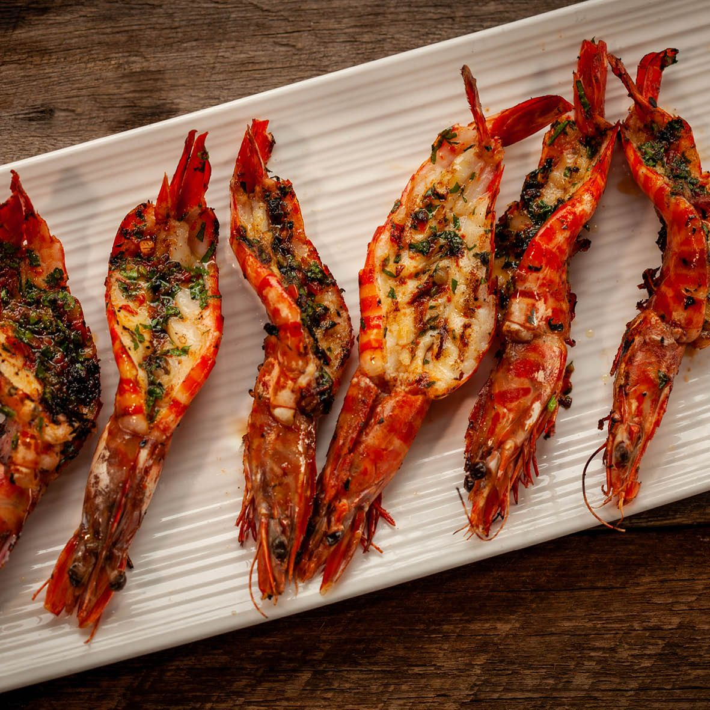

Butterfly Shrimp
Home

Description
Butterflying your shrimp expands the surface area, allowing it to cook evenly and absorb maximum flavor from the grill. I've gathered some top-rated recipes from the web, or you can follow the quick garlic-butter recipe below.
Ingredients
- 1 lb jumbo shrimp, peeled, deveined, and butterflied
- 4 tbsp unsalted butter, melted
- 4 cloves garlic, finely minced
- 1 tbsp fresh lemon juice
- ½ tsp paprika
- ¼ tsp red pepper flakes (optional)
- Salt and black pepper to taste
- Fresh parsley
Instructions
- Prep the shrimp: If not already done, use a sharp knife to cut down the back curve of each shrimp, slicing deep but not all the way through. Press open gently so the shrimp lays completely flat. Pat dry with a paper towel.
- Make the basting sauce: In a small bowl, whisk together the melted butter, minced garlic, lemon juice, paprika, red pepper flakes, salt, and pepper
- Preheat the grill: Light your grill or heat a griddle pan to medium-high heat. Lightly oil the grates to prevent sticking.
- Grill: Brush the flat, cut side of the shrimp generously with the garlic butter mixture. Place them on the hot grill, cut-side down first. Grill for 2 to 3 minutes until a light char forms, then flip.
- Finish: Brush the shell side with the remaining butter and grill for another 1 to 2 minutes until the flesh is completely opaque and pink.
- Serve: Remove from heat, garnish with fresh parsley, and serve immediately with extra lemon wedges.